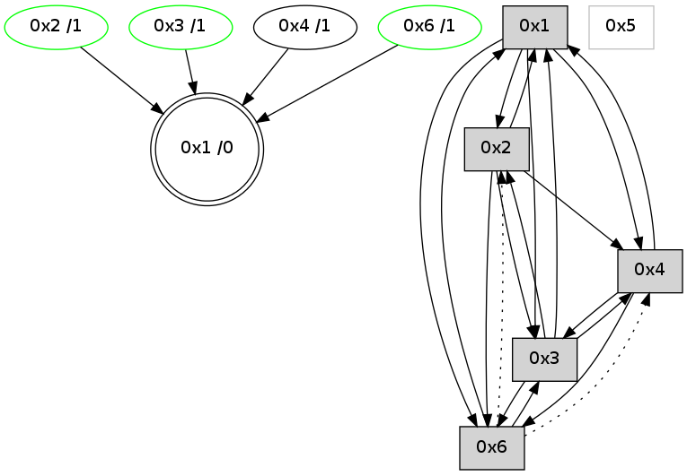

>> << IDX [start] -100 -25 -5 +0 +5 +25 +100 [710.261726141]
 Previous packets
----------------------------------------------------------------------
705.340641 beacon01(adaf) #0 coord=01,02,05,03,04,06 cycle=432.0ms assoc
-- color-indic=0 64 dd bc
705.360603 beacon05(adaf) #0 coord=01,02,05,03,04,06 cycle=432.0ms assoc 64 2a 69
705.390603 beacon06(adaf) #0 coord=01,02,05,03,04,06 cycle=432.0ms assoc 64 64 7b
705.401275 [STC(1) #0.27 to-color d=0]
705.405755 [Hello(3): seq=506 sym=4,2,1,6 sysInfo= stat=4:1,0,1,0/2:0,0,0,0/1:4,0,3,0/6:3,0,10,2]
----------------------------------------------------------------------
705.832751 beacon01(adaf) #0 coord=01,02,05,03,04,06 cycle=432.0ms assoc
-- color-indic=0 64 91 0c
705.842712 beacon02(adaf) #0 coord=01,02,05,03,04,06 cycle=432.0ms assoc 64 c0 f3
705.852713 beacon05(adaf) #0 coord=01,02,05,03,04,06 cycle=432.0ms assoc 64 66 d9
705.862712 beacon03(adaf) #0 coord=01,02,05,03,04,06 cycle=432.0ms assoc 64 fa fd
705.872713 beacon04(adaf) #0 coord=01,02,05,03,04,06 cycle=432.0ms assoc 64 5c d7
705.882714 beacon06(adaf) #0 coord=01,02,05,03,04,06 cycle=432.0ms assoc 64 28 cb
705.894487 [STC(2)->1 #0.27 stable,to-color d=1]
705.897077 [TreeStatus(2)-.->1 #0.27 stable child=1]
705.898237 [Hello(4): seq=508 sym=3,1 sysInfo= stat=3:15,0,8,6/1:2,0,8,0]
705.900284 [Hello(6): seq=422 sym=3,1 asym=4,2 sysInfo=hasWarning stat=3:3,0,9,5/1:11,0,8,0/4:1,0,1,0/2:5,0,2,2]
705.903206 [Hello(1): seq=407 sym=2,6,3,4 sysInfo= stat=2:2,0,4,4/6:1,0,1,1/3:15,0,6,6/4:0,0,1,0]
705.905427 [STC(4)->1 #0.27 to-color d=1]
705.912727 [STC(6)->1 #0.27 stable,to-color d=1]
705.916627 [TreeStatus(6)-.->1 #0.27 stable child=1]
----------------------------------------------------------------------
706.324860 beacon01(adaf) #0 coord=01,02,05,03,04,06 cycle=432.0ms assoc
-- color-indic=0 64 55 63
706.334820 beacon02(adaf) #0 coord=01,02,05,03,04,06 cycle=432.0ms assoc 64 04 9c
706.344821 beacon05(adaf) #0 coord=01,02,05,03,04,06 cycle=432.0ms assoc 64 a2 b6
706.354820 beacon03(adaf) #0 coord=01,02,05,03,04,06 cycle=432.0ms assoc 64 3e 92
706.364821 beacon04(adaf) #0 coord=01,02,05,03,04,06 cycle=432.0ms assoc 64 98 b8
706.374821 beacon06(adaf) #0 coord=01,02,05,03,04,06 cycle=432.0ms assoc 64 ec a4
706.386518 [Hello(2): seq=1000 sym=4,6,1,3 sysInfo= stat=4:2,0,2,0/6:1,0,1,1/1:2,0,6,0/3:0,0,2,5]
----------------------------------------------------------------------
706.816970 beacon01(adaf) #0 coord=01,02,05,03,04,06 cycle=432.0ms assoc
-- color-indic=0 64 0b 02
706.836932 beacon05(adaf) #0 coord=01,02,05,03,04,06 cycle=432.0ms assoc 64 fc d7
706.866933 beacon06(adaf) #0 coord=01,02,05,03,04,06 cycle=432.0ms assoc 64 b2 c5
706.878358 [Hello(4): seq=509 sym=3,1 sysInfo= stat=3:0,0,8,6/1:2,0,8,0]
706.882311 [Hello(6): seq=423 sym=3,1 asym=4,2 sysInfo=hasWarning stat=3:4,0,9,5/1:11,0,8,0/4:1,0,1,0/2:5,0,2,2]
706.892408 [Hello(1): seq=408 sym=2,6,3,4 sysInfo= stat=2:3,0,4,4/6:1,0,2,2/3:15,0,6,6/4:0,0,2,0]
----------------------------------------------------------------------
707.309078 beacon01(adaf) #0 coord=01,02,05,03,04,06 cycle=432.0ms assoc
-- color-indic=0 64 cf 6d
707.319038 beacon02(adaf) #0 coord=01,02,05,03,04,06 cycle=432.0ms assoc 64 9e 92
707.329039 beacon05(adaf) #0 coord=01,02,05,03,04,06 cycle=432.0ms assoc 64 38 b8
707.339038 beacon03(adaf) #0 coord=01,02,05,03,04,06 cycle=432.0ms assoc 64 a4 9c
707.349041 beacon04(adaf) #0 coord=01,02,05,03,04,06 cycle=432.0ms assoc 64 02 b6
707.359039 beacon06(adaf) #0 coord=01,02,05,03,04,06 cycle=432.0ms assoc 64 76 aa
707.370744 [Hello(3): seq=508 sym=4,2,1,6 sysInfo=hasWarning stat=4:3,0,2,0/2:0,0,1,1/1:6,0,3,0/6:5,0,11,3]
----------------------------------------------------------------------
707.801185 beacon01(adaf) #0 coord=01,02,05,03,04,06 cycle=432.0ms assoc
-- color-indic=0 64 83 dd
707.811146 beacon02(adaf) #0 coord=01,02,05,03,04,06 cycle=432.0ms assoc 64 d2 22
707.821147 beacon05(adaf) #0 coord=01,02,05,03,04,06 cycle=432.0ms assoc 64 74 08
707.831147 beacon03(adaf) #0 coord=01,02,05,03,04,06 cycle=432.0ms assoc 64 e8 2c
707.841146 beacon04(adaf) #0 coord=01,02,05,03,04,06 cycle=432.0ms assoc 64 4e 06
707.851147 beacon06(adaf) #0 coord=01,02,05,03,04,06 cycle=432.0ms assoc 64 3a 1a
707.862230 [Hello(1): seq=409 sym=2,6,3,4 sysInfo= stat=2:3,0,4,4/6:1,0,2,2/3:0,0,6,6/4:0,0,2,0]
707.865704 [STC(1) #0.28 to-color d=0]
707.868215 [Hello(4): seq=510 sym=6,3,1 sysInfo= stat=6:0,0,0,0/3:1,0,8,6/1:3,0,8,0]
----------------------------------------------------------------------
708.293293 beacon01(adaf) #0 coord=01,02,05,03,04,06 cycle=432.0ms assoc
-- color-indic=0 64 47 b2
708.303253 beacon02(adaf) #0 coord=01,02,05,03,04,06 cycle=432.0ms assoc 64 16 4d
708.313254 beacon05(adaf) #0 coord=01,02,05,03,04,06 cycle=432.0ms assoc 64 b0 67
708.323255 beacon03(adaf) #0 coord=01,02,05,03,04,06 cycle=432.0ms assoc 64 2c 43
708.333254 beacon04(adaf) #0 coord=01,02,05,03,04,06 cycle=432.0ms assoc 64 8a 69
708.343254 beacon06(adaf) #0 coord=01,02,05,03,04,06 cycle=432.0ms assoc 64 fe 75
708.355421 [Hello(3): seq=509 sym=4,2,1,6 sysInfo=hasWarning stat=4:3,0,2,0/2:0,0,1,1/1:7,0,4,0/6:6,0,11,3]
708.358554 [STC(3)->1 #0.28 stable,to-color d=1]
708.361804 [TreeStatus(3)-.->1 #0.28 stable child=1]
----------------------------------------------------------------------
708.785401 beacon01(adaf) #0 coord=01,02,05,03,04,06 cycle=432.0ms assoc
-- color-indic=0 64 0a b5
708.795363 beacon02(adaf) #0 coord=01,02,05,03,04,06 cycle=432.0ms assoc 64 5b 4a
708.805362 beacon05(adaf) #0 coord=01,02,05,03,04,06 cycle=432.0ms assoc 64 fd 60
708.815364 beacon03(adaf) #0 coord=01,02,05,03,04,06 cycle=432.0ms assoc 64 61 44
708.825362 beacon04(adaf) #0 coord=01,02,05,03,04,06 cycle=432.0ms assoc 64 c7 6e
708.835363 beacon06(adaf) #0 coord=01,02,05,03,04,06 cycle=432.0ms assoc 64 b3 72
708.847049 [Hello(4): seq=511 sym=6,3,1 sysInfo= stat=6:0,0,0,0/3:2,0,9,7/1:3,0,8,0]
708.850487 [Hello(1): seq=410 sym=2,6,3,4 sysInfo= stat=2:4,0,4,4/6:1,0,2,2/3:1,0,7,7/4:0,0,2,0]
----------------------------------------------------------------------
709.277509 beacon01(adaf) #0 coord=01,02,05,03,04,06 cycle=432.0ms assoc
-- color-indic=0 64 ce da
709.287471 beacon02(adaf) #0 coord=01,02,05,03,04,06 cycle=432.0ms assoc 64 9f 25
709.297470 beacon05(adaf) #0 coord=01,02,05,03,04,06 cycle=432.0ms assoc 64 39 0f
709.307470 beacon03(adaf) #0 coord=01,02,05,03,04,06 cycle=432.0ms assoc 64 a5 2b
709.317470 beacon04(adaf) #0 coord=01,02,05,03,04,06 cycle=432.0ms assoc 64 03 01
709.327471 beacon06(adaf) #0 coord=01,02,05,03,04,06 cycle=432.0ms assoc 64 77 1d
709.339145 [Hello(3): seq=510 sym=4,2,1,6 sysInfo=hasWarning stat=4:3,0,2,0/2:0,0,1,1/1:8,0,4,0/6:7,0,11,3]
----------------------------------------------------------------------
709.769618 beacon01(adaf) #0 coord=01,02,05,03,04,06 cycle=432.0ms assoc
-- color-indic=0 64 82 6a
709.779578 beacon02(adaf) #0 coord=01,02,05,03,04,06 cycle=432.0ms assoc 64 d3 95
709.789579 beacon05(adaf) #0 coord=01,02,05,03,04,06 cycle=432.0ms assoc 64 75 bf
709.799580 beacon03(adaf) #0 coord=01,02,05,03,04,06 cycle=432.0ms assoc 64 e9 9b
709.809580 beacon04(adaf) #0 coord=01,02,05,03,04,06 cycle=432.0ms assoc 64 4f b1
709.819580 beacon06(adaf) #0 coord=01,02,05,03,04,06 cycle=432.0ms assoc 64 3b ad
709.831254 [Hello(4): seq=512 sym=6,3,1 sysInfo= stat=6:0,0,0,0/3:3,0,9,7/1:4,0,8,0]
709.833707 [Hello(1): seq=411 sym=2,6,3,4 sysInfo= stat=2:4,0,4,4/6:1,0,2,2/3:2,0,7,7/4:0,0,2,0]